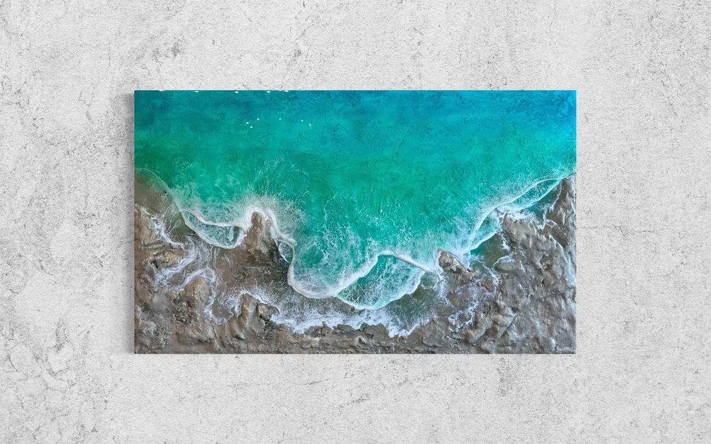


海のレジンアート販売｜沖縄のアトリエ
沖縄のレジンアートならMura Living
壁にも、テーブルにも。
家具職人歴17年以上の手で、白い砂浜と
サンゴ礁を立体で表現しています。
部屋に入ると、まず目に入る海です。
ひとつとして同じ海はありません。
サイズごとの価格は、作品一覧のページにまとめています。
作品WORKS


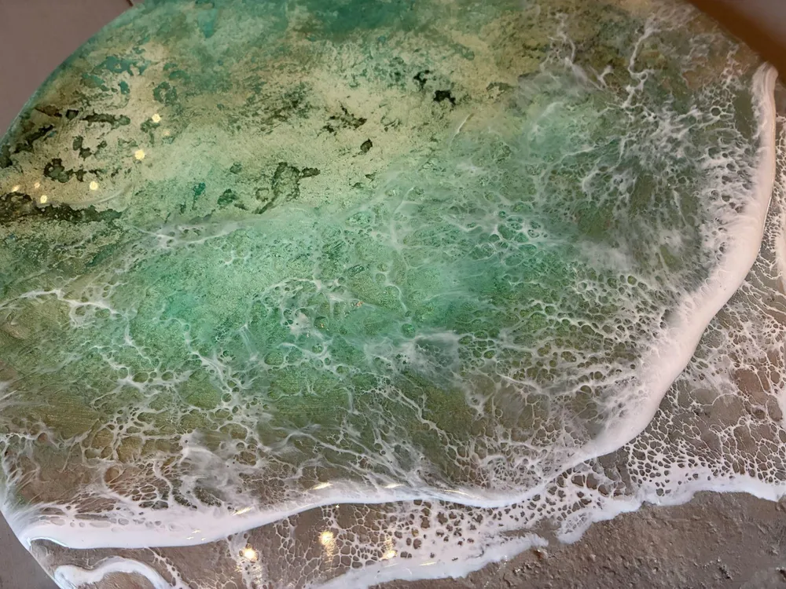
Mura Livingは、沖縄県豊見城市の小さなアトリエです。
オーダー家具の職人として17年以上、木の家具を作ってきた手で、
壁に掛ける海とテーブルを作っています。
Mura LivingについてABOUT
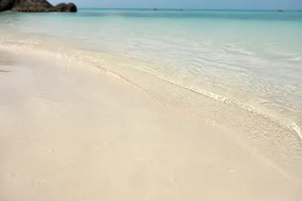
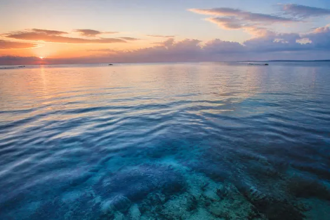

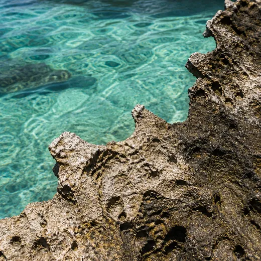
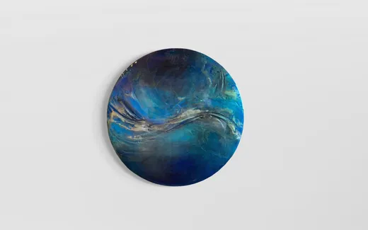
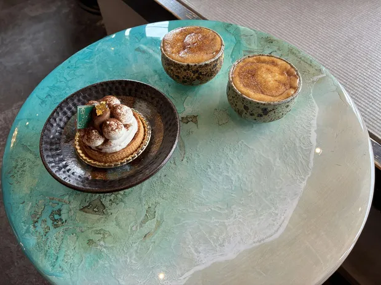
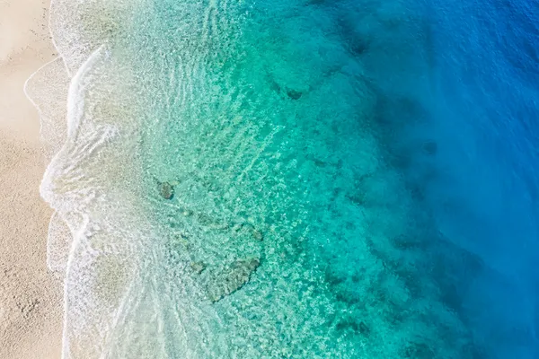


海の風景GALLERY

海のテーブルTABLE
家具職人の技術で、
天板（テーブルの表面）から脚まで仕上げます。
毎日さわるテーブルに、海を作ります。
サイズや形はご相談ください。
丸テーブル 直径45cm×高さ58cm ¥180,000〜（税別）
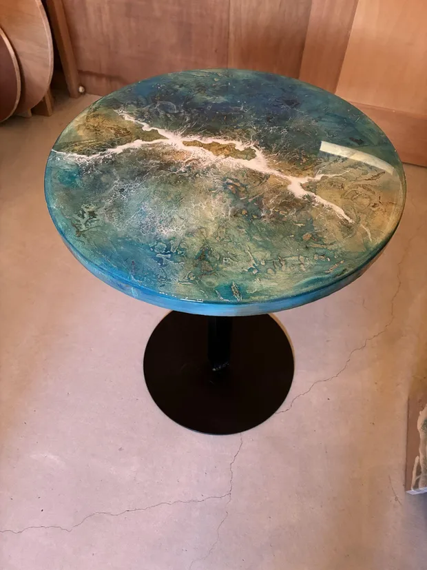
REMAKE思い出の天板を海に
使い込んだテーブルも、
天板を作り替えれば、毎日見たくなる一台になります。
沖縄県内はテーブルを取りに伺います。
県外の方は送っていただく形でご相談ください。
事例：直径90cm ¥300,000（税別・デザイン設計、制作、設置）
リメイクについて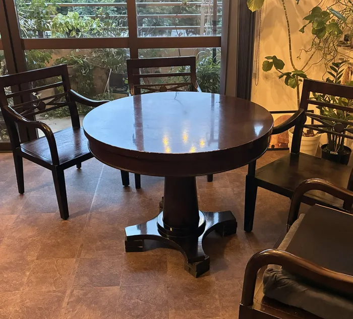
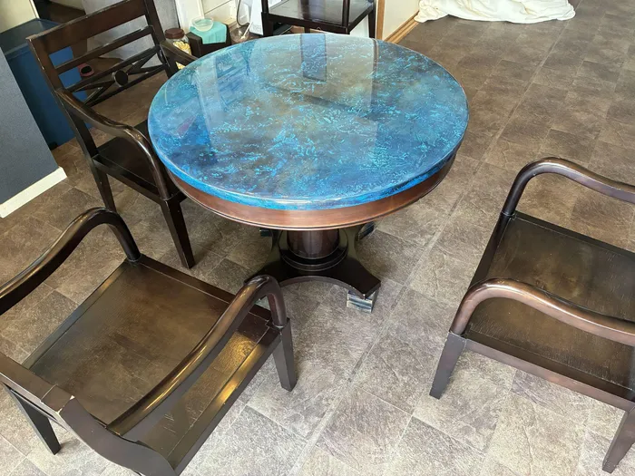
凹凸を作る
砂浜や海底の起伏を、
土台から形にします。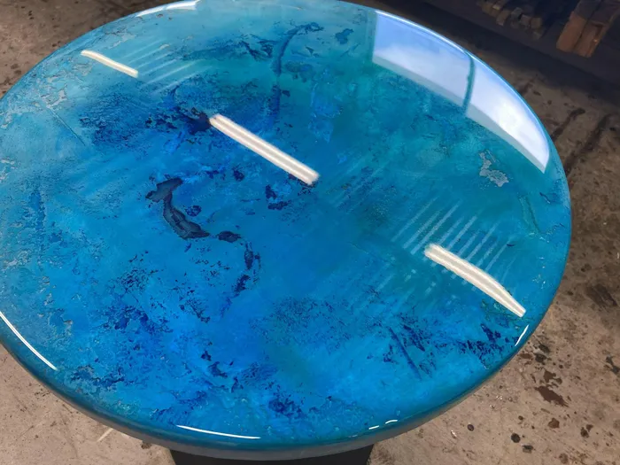
青を重ねる
何色もの青を重ね、
水の深さを出します。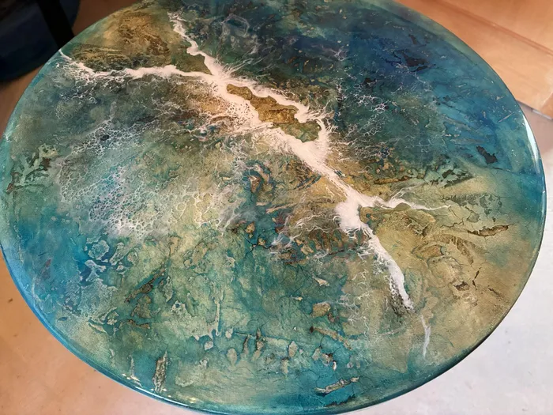
削って磨く
削ってはこすり、
波の表情を整えます。
海が立体に見える理由OUR CRAFT
ホテルのロビー、クリニックの待合室、事務所の応接。
場所と光に合わせて、サイズと色をご提案します。
- ホテル・ヴィラ・民泊
 クリニック・事務所
クリニック・事務所- カフェ・サロン・店舗
- 別荘・クルーザー
法人・設計事務所の方へ
導入先の例：歯科クリニックの待合室、事務所、工務店の打ち合わせテーブル、海外の投資用民泊物件、ヴィラ
お店・施設に飾る海FOR BUSINESS

オンラインショップで買う
販売中の作品は、STORESで
ONLINE STORE
そのままご購入いただけます。アトリエで実物を見て買う
豊見城市のアトリエで、
見学について
質感を確かめて選べます。相談してオーダーする
お部屋の写真を見ながら、
オーダーについて
サイズと色を一緒に決めます。
写真ではわかりにくい凹凸と、光で変わる表情を、
実物でご覧ください。
遠方の方はZoomでも作品をお見せします。
Mura Living
沖縄県豊見城市（番地はご予約の方にお伝えします）
ご見学はご予約制です